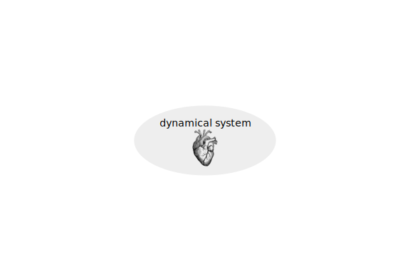
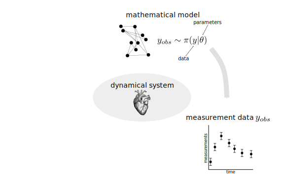
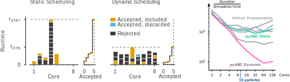
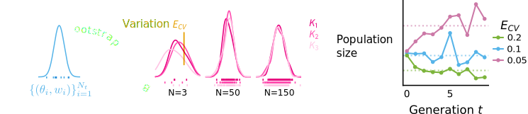

Overview
- Motivation for likelihood-free inference
- Basics of ABC
- pyABC: Features and usage
Why?
Parameter inference


(Likelihood-free) Bayesian inference


- goal: infer parameters $\theta$ given data $y_\text{obs}$, i.e. analyze the posterior distribution
- common optimization and sampling methods require the (unnormalized) likelihood
- can happen: numerical evaluation infeasible
- ... but possible to simulate data $y\sim\pi(y|\theta)$
Multi-scale models
 based on Hasenauer et al., J. Coup. Sys. and Mult. Dyn. 2015
based on Hasenauer et al., J. Coup. Sys. and Mult. Dyn. 2015
Example: Modeling tumor growth
based on Jagiella et al., Cell Systems 2017
- cells modeled as interacting stochastic agents, dynamics of extracellular substances by PDEs
- simulate up to 106 cells
- 10s - 1h for one forward simulation
- 7-18 parameters
What we tried |
|
Failed |
Worked |
|
--- |
How to infer parameters for complex stochastic models?
ABC
Approximate Bayesian ComputationRejection ABC
With distance $d$, threshold $\varepsilon>0$:
until $N$ acceptances:
- sample $\theta\sim g(\theta)$
- simulate data $y\sim\pi(y|\theta)$
- if $d(s(y), s(y_\text{obs}))\leq\varepsilon$, accept $\theta$ with probability $\propto \frac{g(\theta)}{f(\theta)}$
A "derivation"
Rejection sampling
Background: Want to sample from $f$, but can only sample from
$g \gg f$.
Let $f=\pi(\theta|y_\text{obs}), g=\pi(\theta) \Rightarrow \frac{\pi(\theta|y_\text{obs})}{\pi(\theta)} \propto \pi(y_\text{obs}|\theta)$
until $N$ acceptances:
Accepted $\theta$ are independent samples from $f(\theta)$.- sample $\theta\sim g(\theta)$
- accept $\theta$ with probability $\propto \frac{g(\theta)}{f(\theta)}$
Let $f=\pi(\theta|y_\text{obs}), g=\pi(\theta) \Rightarrow \frac{\pi(\theta|y_\text{obs})}{\pi(\theta)} \propto \pi(y_\text{obs}|\theta)$
- not available
- idea: circumvent likelihood evaluation by simulating data and matching them to the observed data
Likelihood-free rejection sampling
until $N$ acceptances:
- sample $\theta\sim g(\theta)$
- simulate data $y\sim\pi(y|\theta)$
- if $y=y_\text{obs}$, accept $\theta$ with probability $\propto \frac{g(\theta)}{f(\theta)}$
- Acceptance probability: $\mathbb{P}[y_\text{obs}]$
- can be small in particular for continuous data
- idea: accept simulations that are similar to $y_\text{obs}$
Rejection ABC
With distance $d$, threshold $\varepsilon>0$:
until $N$ acceptances:
- sample $\theta\sim g(\theta)$
- simulate data $y\sim\pi(y|\theta)$
- if $d(y, y_\text{obs})\leq\varepsilon$, accept $\theta$ with probability $\propto \frac{g(\theta)}{f(\theta)}$
- curse of dimensionality: if the data are too high-dimensional, the probability of simualting similar data sets is small
- idea: create an informative lower-dimensional representation via summary statistics
- ideally minimal sufficient statistics
Toy example
$y\sim\mathcal{N}(2(\theta-2)\theta(\theta+2), 1+\theta^2)$, $y_\text{obs}=2$
$\pi(\theta) = U[-3,3]$
$d=|{\cdot}|_1$
$N=1000$ acceptances


$\pi(\theta) = U[-3,3]$
$d=|{\cdot}|_1$
$N=1000$ acceptances
Approximate Bayesian Posterior
We want: \[\pi(\theta|y_\text{obs}) \propto \color{red}{p(y_\text{obs}|\theta)}\pi(\theta)\]
We get: \[\pi_{ABC}(\theta|s(y_\text{obs})) \propto \color{red}{\int I(\{d(s(y), s(y_\text{obs})) \leq \varepsilon\})p(y|\theta)\operatorname{dy}}\pi(\theta) \approx \frac{1}{N} \sum_{i=1}^N\delta_{\theta^{(i)}}(\theta)\] with distance $d$, threshold $\varepsilon>0$, and summary statistics $s$
Sources of approximation errors in ABC
- model error (as for every model of reality)
- Monte-Carlo error (as for sampling in general)
- summary statistics
- epsilon threshold
Far better an approximate answer to the right question, which is often vague, than an exact answer to the wrong question, which can always be made precise.
John Tukey 1962
Efficient samplers
- Rejection ABC, the basic ABC algorithm, can be inefficient repeatedly sampling from the prior
- smaller $\varepsilon$ leads to lower acceptance rates
- many (likelihood-based) algorithms like IS, MCMC, SMC, SA have ABC-fied versions
github.com/icb-dcm/pyabc
Klinger et al., Bioinformatics 2018

Easy to use
# define problem
abc = pyabc.ABCSMC(model, prior, distance)
# pass data
abc.new(database, observation)
# run it
abc.run()
Parallel backends: 1 to 1,000s cores

Parallelization strategies
Klinger et al., CMSB Proceedings 2017 Example: Tumor growth model
based on Jagiella et al., Cell Systems 2017Define summary statistics

- 400 cores
- 3 days
- 1.8e6 simulations

ABC worked where many other methods had failed.

ABC worked where many other methods had failed.

Uncertainty-aware predictions, easy data integration.
Some details
Adaptive population sizes
Klinger et al., CMSB Proceedings 2017  idea: adapt population size trying to match a target accuracySelf-tuning distance functions
based on Prangle, Bayesian Analysis 2015Measurement noise
How to efficiently account for measurement noise in ABC?
And ...
...
Joint initiative to make ABC fit for multi-cellular models

Morpheus toolbox: Staruß et al., Bioinformatics 2014
Summary
Summary
- parameter estimation when we cannot evaluate the likelihood is challenging
- ABC allows for reliable statistical inference
- pyABC provides an easy-to-use framework
Literature
- Sisson, Scott A., Yanan Fan, and Mark Beaumont, eds. Handbook of approximate Bayesian computation. CRC Press, 2018.
- Beaumont, Mark A. "Approximate Bayesian computation in evolution and ecology." Annual review of ecology, evolution, and systematics 41 (2010): 379-406.
- Martin, Gael M., David T. Frazier, and Christian P. Robert. "Computing Bayes: Bayesian Computation from 1763 to the 21st Century." arXiv preprint arXiv:2004.06425 (2020).
Acknowledgments
Thanks to: Jan Hasenauer (and the whole lab), Elba Raimúndez-Álvarez, Emad Alamoudi, the FitMultiCell team, ...